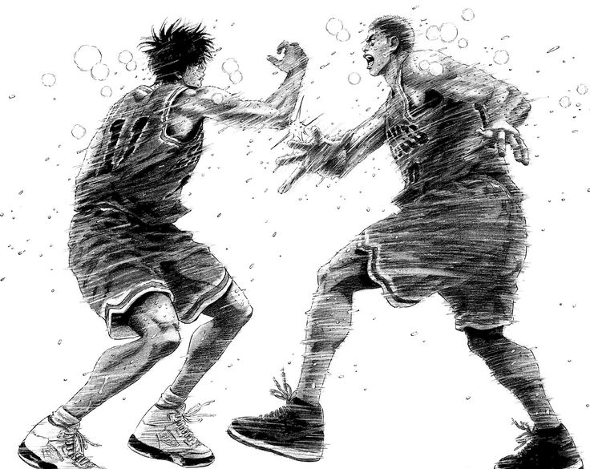
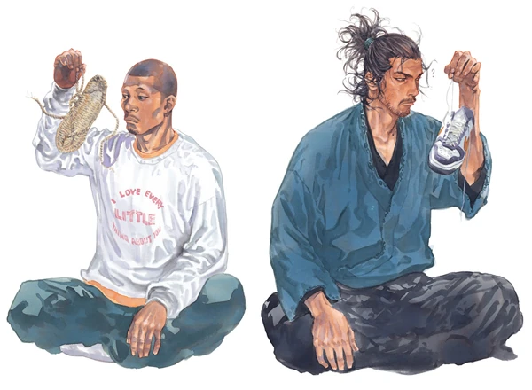
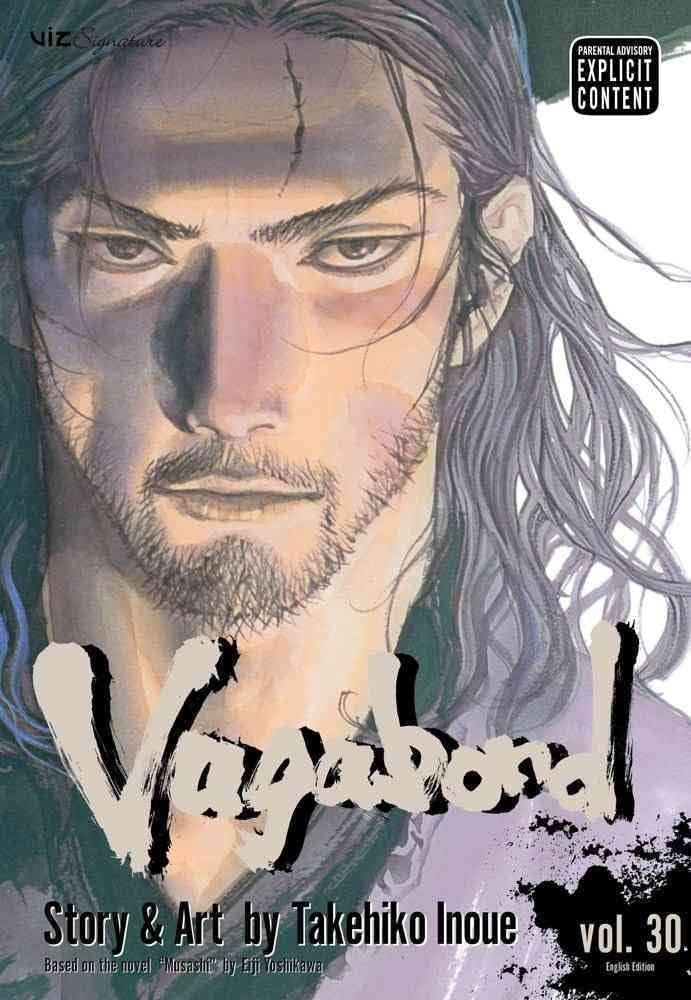
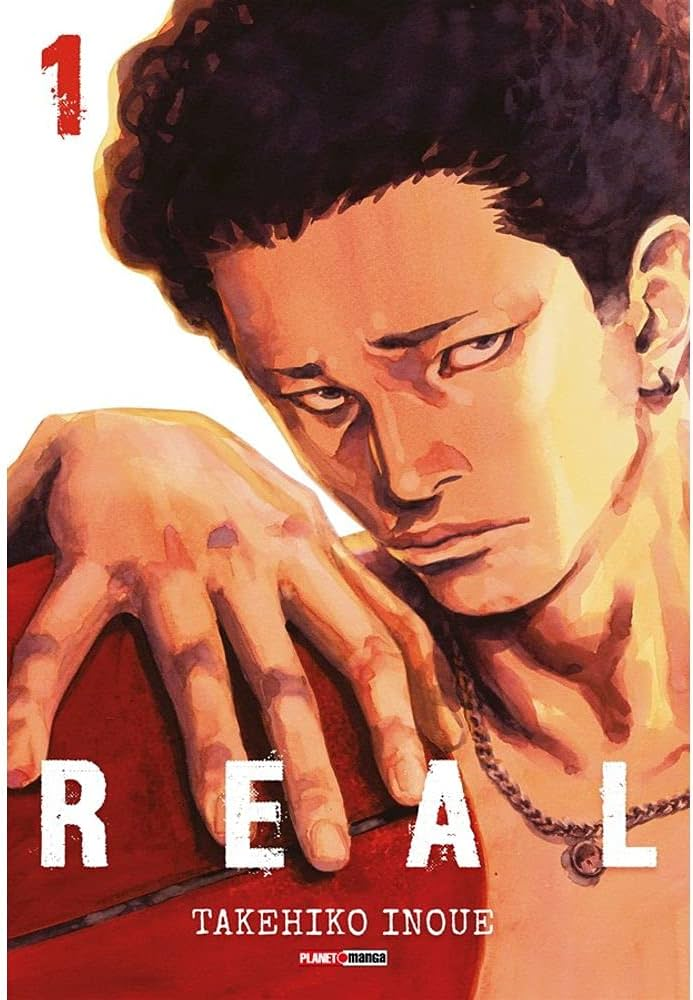

Takehiko Inoue (井上 雄彦 Inoue Takehiko) es un importante mangaka nacido en Kyushu, el 12 de enero de 1970.
Takehiko Inoue
Durante su vida estudiantil practicó el baloncesto, que luego se convertiría en uno de los temas principales de sus obras. Su estilo se caracteriza por la gran claridad y realismo, que refleja de modo fiel las proporciones del cuerpo. Su primer éxito como autor fue la conquista del prestigioso Tezuka Show, gracias a su obra autoconclusiva Kaede Purple, centrada en el baloncesto.
Takehiko Inoue
(井上武彦, Inoue Takehiko)
Informacación
Género:
Maculino
Ocupación
Mangaka
Su primer gran éxito llegó con la publicación de Slam Dunk, a partir de 1990. Llegó a convertirse en el manga más vendido de la historia (título que le arrebató años después One Piece) y fue adaptado al anime con notable aceptación. Se trataba de una obra de gran calidad gráfica y que combinaba un tratamiento emotivo y realista del baloncesto con un sentido del humor desbordante que le dio mucho éxito.

Tras 31 tomos de Slam Dunk, Inoue realizó una obra también centrada en el baloncesto, pero de un corte futurista, llamada Buzzer Beater. También realizó varias obras cortas, entre las que destaca Piercing. Sin embargo, no consiguió otro gran éxito hasta que comenzó a publicar Vagabond, una historia basada en la vida de Musashi Miyamoto, un guerrero legendario japonés, que sigue publicando actualmente. Alterna la publicación de esta obra con Real, centrada en el mundo del baloncesto en silla de ruedas. Actualmente Inoue es uno de los mangakas más importantes y respetados de la industria.

Obras
The Charmaleon Jail
Género
Acción, Shonen
Guión
Kazuhiko Watanabe
Dibujo y Entintado
Takehiko Inoue
Sinopsis
CHAMELEON JAIL, publicado por primera vez en la Shonen Jump, narra la historia de un «risk hunter» o cazarrecompensas llamado Chameleon Jail que se dedica a boicotear y resolver numerosos crímenes en la ciudad de Nueva York bajo las órdenes de Shall, una interesante mujer que tiene una agencia de detectives.
Slam Dunk
Género
Deporte, Comedia
Guión
Takehiko Inoue
Dibujo y Entintado
Takehiko Inoue
Sinopsis
Slam Dunk es un manga Shonen del género Spokon escrito e ilustrado por Takehiko Inoue. La trama sigue a Hanamichi Sakuragi, un estudiante de secundaria que decide practicar baloncesto para conquistar a Haruko Akagi, la chica de que está enamorado

Vagabond
Género
Épico, artes marciales, histórico, drama
Guión
Takehico Inoue(basada en la novela escrita por Eiji Yoshikawa.)
Dibujo y Entintado
Takehico Inoue
Sinopsis
El manga Vagabond de Takehiko Inoue cuenta la historia de Musashi Miyamoto, una de las figuras más importantes de la historia japonesa en el desarrollo de las técnicas de lucha con espada. La historia se desarrolla en el siglo XVI, tras la batalla de Sekigahara, y se centra en Takeno Shinmen, un joven de 17 años que sobrevive a la batalla y decide emprender un viaje por Japón en busca de autosuperación:

Real
Género
drama, deportes
Guión
Takehico Inoue
Dibujo y Entintado
Takehico Inoue
Sinopsis
Un chico de Secundaria con bastantes malas pulgas y reputación deja el instituto debido a que está destrozado por haber lisiado a una chica en un ligue de una noche. El hecho de que ella quede en silla de ruedas le trae por el camino de la amargura, pero viendo como un grupo de chicos igualmente minusválidos juegan a básquet le hacen entrar ganas de volver a practicar su deporte favorito. Mientras él intenta superar el dolor que le provoca haber arruinado la vida de una chica joven, la gente que conoce sufrirá, luchará y convivirá con la desgracia de ver el mundo desde unos centímetros más abajo.